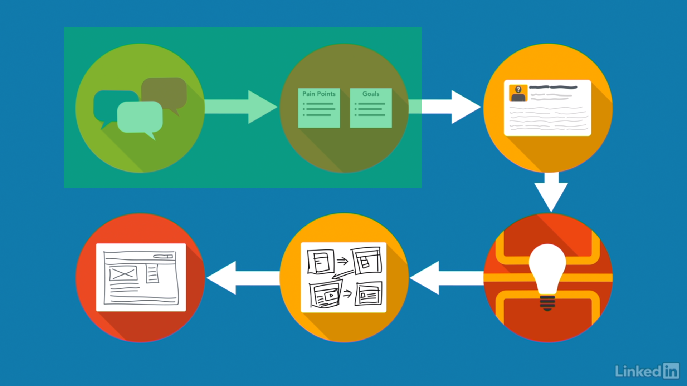
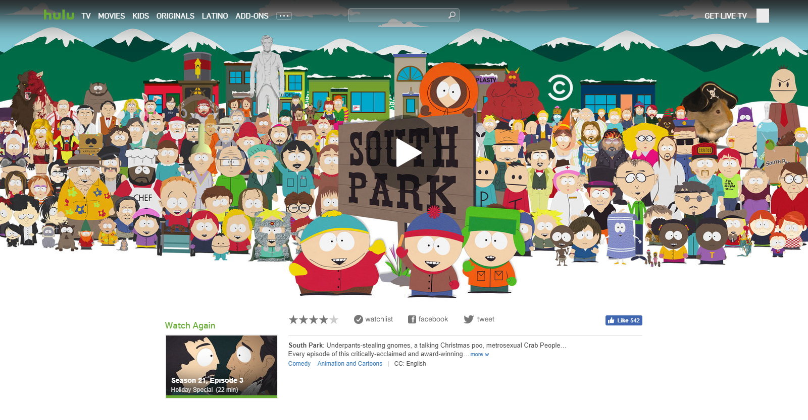

Hulu Usability
Data Gathering and Analysis Project
Data Gathering and Analysis Project
This project contains the first and second part of a 6 step user-centered design process. This process aims to target high-level frustrations that the majority of users experience when interacting with products and services. The two steps detailed in this project are Data Gathering and Analysis.
We were not required to go through the entire user-centered design process since we focused more on learning usability best practices. Check out the Personas and the Wireframes projects for other steps in the user-centered design process.
User-centered Design image by Lynda.com
As part of Cal State Fullerton’s User Experience and Customer-Centered Design certificate course series, we had to create and moderate a usability study with any company’s product or service as our target of the study. We were recommended to choose a product that we felt that had its users experiencing frustration when navigating around the app’s pages.
I chose Hulu’s desktop site when three classmates and I ran into difficulties finding an episode of South Park that we wanted to watch. At the time, we stopped mid-season and added the next episode to the Queue. Among the four of us, we share one Hulu account so the queue is available to all of us. Months later, we came back to a refreshed Hulu layout, and with it the removal of all the videos in the queue.
Hulu had merged together the Queue and another feature called Watch Later. For us that meant manually tracking down the episode of South Park that we were watching as a group. One classmate navigated onto the show’s main page and proceeded to click through more than 20 seasons worth of episodes to get to the one we left off at. Another tried searching for the season only to be given unnumbered episodes to try and sift through.
Were the four of us just unable to navigate through Hulu’s new layout? I figured it would be worth seeing if others experience the same frustrations when confronted with the same situation we had.
Before recruiting people to take part in a usability study, I asked a classmate in my certificate program to take part in a preliminary run of my usability study. This would help me practice moderating a study as well as iron out technical difficulties and refine some questions for the real deal. After revising and refining my moderation script, I recruited 3 participants to take part in the study in person. 3 other participants were to take the usability study remotely and in the comfort of their own home.
A study by the Nielsen Norman Group shows that as many as 5 users is enough to extract 80% of the meaningful results from the usability study. This works well for qualitative tests since I don’t need sheer numbers to get an idea of what’s happening in Hulu’s design.
Beginning of the usability test script
During the usability study, the participants had the most trouble with working with Hulu’s Watchlist feature. One of the tasks in the usability study involved having them use the Watchlist feature in three different methods. Without an official onboarding process at the beginning of signing up for Hulu, the participants were left to their own devices as to how to go about completing the task. In the end, only 1 out of the 6 participants was able to figure out how to complete all three Watchlist related tasks.
If Hulu intends to keep the Watchlist the way it is, I think providing some sort of “what’s new” feature would highly benefit long time subscribers that need to adjust to Hulu’s layout changes. For new subscribers, adding an in-depth onboarding process for their desktop app would help them get started with all of Hulu’s features and how to take advantage of them.